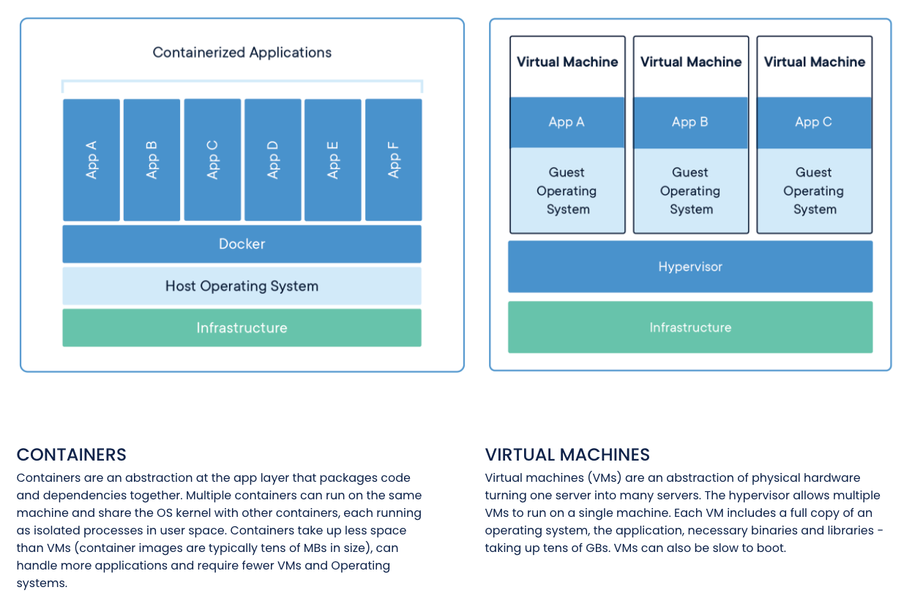

Software Engineering
Computer Science
Process
Modularity
Stream
HTTP Terminology
Resource
HTTP
TCP
UDP
SSL
SSL Certificate
TLS
HTTP and TCP when opening a page
Types of HTTP methods
PUT vs. POST requests
Core elements in an HTTP request
Core elements in an HTTP response
HTTP status codes
URL
Routing
Web Development Terminology
Front end
Back end
Web server
Protocol
Static vs. dynamic website
Responsive website
Application server
Database
Web API
Authentication
Authorization
Back-end frameworks
Events
Event handlers
Listeners
Sandboxing
Computer Language Terminology
Control flow
Side effects
Pure function
Programming paradigm
First class citizens
Module vs. package vs. library vs. framework
Utility functions
Optional arguments
Composition
Don’t repeat yourself (DRY)
Programming Paradigms
Declarative programming
Imperative programming
Imperative programming vs. declarative programming
Advantages to declarative programming
Functional programming
Currying
Pros and cons of currying
Software Architecture Terminology
Evolution of software decentralization
Service
Service-oriented architecture (SOA)
Core values of SOA
Categories of SOA services
Microservice
Microservice architecture
REST
REST requests contents
REST response contents
Middleware
Benefits of middleware
Databases Terminology
Unstructured data
NoSQL
References
Computer Science
Process
- An instance of a computer program being executed - what you see on the Activity Monitor
Modularity
- Programming paradigm in which a program is broken down into distinct parts, each with its own single piece of functionality
- Allows for scalability
Stream
- The sequential processing of data
- It’s preferable to stream because then you don’t need enough RAM to process everything at once. You also don’t need all the data onhand at the beginning
HTTP Terminology
Resource
- Anything that’s on the web, including HTML files, stylesheets, images, videos, and scripts
- They are provided to your browser from servers via HTTP requests
HTTP
- Hypertext Transfer Protocol - structure for requests and responses over the internet from one point to another
- Versions:
- HTTP/1.1: Sends messages in the form of text. Slowest and first HTTP version
- HTTP/2: Transmits all messages in binary rather than plain text
- This allows for more-efficient data transmission techniques such as smaller packets of data
- Also allows a single TCP connection to be made for communicating. HTTP/1.1 requires multiple
- HTTP/3: An evolved version that better-handles lost packets
TCP
- Transmission Control Protocol - the transfer of resources.
- TCP is what manages the channels between client and server while HTTP is the language that devices on both sides of the connection follow
- Lets two hosts connect and exchange data streams + exchange data in the same order they were sent
- It’s remarkably reliable and error-free
- Note: it does not have any encryption security. This is why TLS is also used
UDP
- User Datagram Protocol: a less-common transport protocol
- Differs from TCP in that it doesn’t require handshaking. There is no guarantee of messages being delivered, or being delivered in the right order
- It’s quicker than TCP because of this - is better when you need to read data quickly i.e. video streaming
SSL
- Secure Sockets Layer: an encryption protocol for internet communications
- Developed by Netscape
- Has been deprecated in favor of TLS, which evolved from it
SSL Certificate
- A data file hosted in the website origin server that make SSL/TLS encryption possible
- They hold a public key for the website along with the website identity and other metadata (domain name, who it was issued to (typically a company), issue date, expiration date, who issued it, and other info)
- They have a secret and secure private key as well
- Devices that communicate with the website reference the SSL Certificate file to get the public key to verify the server identity
TLS
- Transport Layer Security: a popular security protocol for secure data transmission
- It evolved from SSL - but is basically the same thing with a couple minor changes. SSL still has a ton of name recognition and people just refer to it as SSL/TLS
- Websites that have SSL/TLS implemented have HTTPS (HTTP Secure) instead of HTTP. This means that web traffic to it is encrypted
HTTP and TCP when opening a page
- When you type in a URL in the browser (client), a request to open a TCP channel is made to the internet domain name server that hosts that URL
- The domain name server then returns an IP address to the destination to the client. The client then opens a TCP connection to the server at that IP address and makes a request (i.e. GET)
- The server will respond with a
- After the server sends the response, it closes the connection
- If something new is requested to the server, a new TCP connection is opened and the process is repeated
Types of HTTP methods
- GET: retrieve information from a source
- POST: Submit information to a source. Source will process the info and send it back
- PUT: Creates new information or replaces something that’s already there
- DELETE: Deletes information
PUT vs. POST requests
- Idempotency is the ability for an operation to get called multiple times without changing the outcome more than on the first time
- PUT requests are idempotent. PUT differs from POST as successive POST requests will create duplicates - it’s like placing an order multiple times. Successive PUT requests replace each other
- A POST will often return a new generated id; a PUT assumes you already know the id or some info about what’s being modified
- PUT vs. POST is also a convention (for code readability): PUT is to modify existing resources. POST is to create a new one
Core elements in an HTTP request
- HTTP method
- Path, i.e. https://quinncoyle.com/
- HTTP protocol version: HTTP/1.1, HTTP/2, HTTP/3
- Headers: optional fields to give additional information
- Body: optional if data is required to be sent to the server (i.e. in POST, PUT, PATCH)
Core elements in an HTTP response
- HTTP protocol version
- Status code
- Status message
- Headers
- Body

HTTP status codes
- Numbers that indicate whether a request has been completed successfully
- Five classes are:
- 100-199: Informational
- 200-299: Successful
- 300-399: Redirection
- 400-499: Client error
- 400 is bad syntax
- 401 is unauthorized - unauthenticated
- 403 is forbidden: differs from 401 in that the client’s identity is still known to the server. Note: sometimes servers send a 404 instead of a 403 in this case to hide the existence of a resource from a client
- 404: Not found. For a browser this means the URL isn’t recognized. For an api, it means the resource doesn’t exist
URL
- Uniform Resource Locator - important for both websites and queried API calls
- Can be broken down into the below:
- Protocol: HTTP or HTTPS
- Domain: i.e. quinncoyle.com. Unique reference to identify website on internet
- Path: A specific file or directory on the web server
- Sometimes there are additional path parameters in api’s as well, i.e. /users/15 is the user with id number 15
- Query: A way to filter parameters for more-specific resource requests
- Prefixed by a ? and key value pairs can be separated by &
- Common when there’s dynamic content on the page

Routing
- The process of handling requests (i.e. http) depending on the information provided in the request
- For instance, handle a GET method differently than a POST method
Web Development Terminology
Front end
- Parts of a website that users interact with and see
- Typically composed of JavaScript, CSS, HTML, and other static components like images and videos. These don’t change.
- Also known as client-side development
Back end
- All of the behind-the scenes processing and data to make a website function
- Sends the proper resources to clients
Web server
- Code running on a remote computer that listens for incoming requests and sends back responses
- Every website has at least one web server
- When you navigate to a page on the browser, you are making a call to a web server
- Interact with web servers via protocols
Protocol
- Format of requests and responses to web servers
- HTTP is the protocol used to access websites
Static vs. dynamic website
- Static: a single request is made by a client and the server sends back a response containing everything that’s needed to view the website
- Analogy: Ordering takeout
- Dynamic website: When the back end holds logic to decide which assets to send and then sends them
- Lots of today’s web applications cater specifically to the user, i.e. your news feed
- Typically use databases. Website accesses info from the db - i.e. if you update a database record the web page changes
- Analogy: sitting down at a restaurant. Lots of back and forth
Responsive website
- Websites that look different on each device - typically depending on screen size
Application server
- The collection of logic needed to deliver dynamic content to a client
- This includes security, payment processing, and tailored advertisements
Database
- Collections of information found on the back ends of modern web applications
- A common architecture looks like:

- Can be divided into two types:
- Relational: information stored in tables with columns and rows
- Examples: MySQL, Postgres
- Non-relational (NoSQL): stores info using key-value pairs or other formats

Web API
- A set of consistent defined rules for interacting with a web application, typically through HTTP requests and responses
Authentication
- Validating the identity of a user
- Techniques:
- Usernames/passwords. Requires securely storing credentials on an encrypted database
- Using external sources i.e. login with Google
- Facial recognition i.e. your phone
Authorization
- The logic of controlling who has access to what resources and abilities on a site. For example, anyone can view your facebook profile page but only you have the ability to change it
Back-end frameworks
- Predefined ways to write, maintain, and scale web applications
- Aka server-side web frameworks and web application frameworks
- Some features
- Route requests to the appropriate resource, i.e. to a distinct URL
- Work more-easily with databases
- User authorization
- Work with HTTP requests and responses
- Render and format data (i.e. from HTML, JSON, XML)
- Security against attack (i.e. a DoS attack)
Events
- Actions that occur in the system, i.e. if a user presses a button or resizes a window
Event handlers
- Functions that can be attached to elements to perform a specific task
- You can only assign one event handler to an element in Javascript. A second one will override the first one
Listeners
- Functions that attach event handlers (i.e. a changeColor function) to a specified element
- In Javascript, the addEventListener() method is commonly used to do it
- You can assign as many event listeners as you want in Javascript
Sandboxing
- Isolating some applications from others
- For instance, the browser on a computer only has limited access to the user’s filesystem so sites can’t manipulate it. Browsers are sandboxed
Computer Language Terminology
Control flow
- The specific order in which statements, functions, or instructions are executed
- Categories include conditional branches (if/else and case/switch), loops until a condition is met, exceptions, and stopping the program
Side effects
- If a state variable is modified outside of the local environment
- In other words, if the function has “an observable effect other than returning (return) a value to whatever invokes the function”
- Examples: non-local variables, changing a static variable, changing a mutable variable passed into the function, or calling I/O
Pure function
- When a function has no side effects
Programming paradigm
- Classification of programming languages based on their features
- Paradigm = a method to solve a problem or do a task
First class citizens
- When in a language, functions (or objects, data types, etc.) are allowed to be bound to variable names, passed as arguments, and returned from other functions like any other data type
Module vs. package vs. library vs. framework
- Module: A file with code in it. Set of functions that is used somewhere else
- Package: Collection of modules which all serve the same purpose
- Library: Collection of packages. Offers a related set of functionalities used
- Does not force a coding style on you
- Framework: Collection of libraries. Also gives an architecture for the development.
- Code is integrated into a framework. You don’t “include” it like you would a library
- Forces a coding style on you
Utility functions
- Functions used to maintain code and debug parts of a program
- They don’t add new functionality
Optional arguments
- Note that in the documentation for many programming languages, optional arguments are placed in [square brackets]
- I.e. app.use([path,] callback [, callback...]) in the express docs
Composition
- The combination of objects or data types into more complex ones
- In OOP: a class that references objects of other classes in instance variables
- Has-a relationships (i.e. car has an engine)
Don’t repeat yourself (DRY)
- Use functions and object oriented programming for reused code when possible
- Combine similar similar tasks in the same element, even if code does not directly repeat itself
- For example, combine the below into addNumber()
const addFive = number => {
const fiveAdded = number + 5;
console.log(`Your number plus 5 is ${fiveAdded}`);
}
const addTen = number => {
const tenAdded = number + 10;
console.log(`Your number plus 10 is ${tenAdded}`);
}
const addTwenty = number => {
const twentyAdded = number + 20;
console.log(`Your number plus 20 is ${twentyAdded}`);
}
const addNumber = (number, addend) => {
const numAdded = number + addend;
console.log(`Your number plus ${addend} is ${numAdded}`);
}
Programming Paradigms
Declarative programming
- A programming paradigm that’s based off of what the program should accomplish and doesn’t describe its particular control flow
- Describes what the problem must accomplish rather than how to do it
- Common examples: database query languages, regular expressions, and functional programming
- Note: Most declarative programming has some underlying imperative abstraction layer. You assume some prior knowledge
- Includes SQL and HTML
Imperative programming
- Programing paradigm in which statements change a program’s state, focusing on how a program operates
- Note: hardware implementation for all computers is imperative (machine code)
- Includes procedural programming and object oriented programming. C, C++, Java (note: since Java 8 it can also be declarative)
Imperative programming vs. declarative programming
- Imperativre is a focus on how to get to the result by listing out the steps to show how to get there. Declarative is concerned with what you want, and it’s up to the language syntax to get you there
- Example: directions to your house
- Imperative: go north out of the parking lot, take a left, get on I80 until exit 34, …
- Declarative: my address is 100 Main St, Truckee CA 95950
- Javascript, C#, Go, and Python can be a mix of imperative and declarative
Advantages to declarative programming
- Helps minimize or eliminate side effects
- Code is more readable
- Program can be context independent, allowing for better code reuse. Whereas often Imperative programming, by definition, relies on the context of the current state
Functional programming
- A programming style in which programs are constructed by the composition of functions
- Functions are in a tree format, rather than a bunch of imperative statements that update a state variable
- Functions are first class citizens
- It’s a subset of declarative programming
Currying
- A functional programming technique used to write modular, reusable, easy-to-test, and easy-to-read code
- It’s declarative, uses immutable variables, and emphasizes pure functions
- Example format in Javascript:
fakeFunction('param1', 'param2', 'param3'); // Non-curried
fakeFunction('param1')('param2')('param3'); // Curried
Pros and cons of currying
- Helpful in more complex applications as an architectural tool for better scaling
- A great way to check that you have all inputs before proceeding
- Identify errors faster - improper function inputs, not enough inputs
- Makes code easier to read - can write functions that just handle one task
- Make code more modular
- Tends to be a more advanced topic
- It can be bad when you have a ton of steps and the nest would get super deep and hard to read
Software Architecture Terminology
Evolution of software decentralization
- Some see the following as a general evolution - the order is not exact:
- Distributed computing → modular programming → SOA → microservices → mashups (web app that uses content from multiple sources in a single interface) → SaaS → cloud computing (use of computer systems, typically data storage and computing power, without direct active management by the user)
Service
- A discrete unit of functionality that can be accessed remotely and updated anytime
- Can be combined and reused in production applications
- Three components:
- Interface: how the service will respond to client requests
- Contract: how the service and client interact (api)
- Implementation: the service code
- It’s logic represents a repeatable business activity with a specific outcome (i.e. process a credit card payment)
- It’s self-contained: acts independently from its execution environment
- It’s clients are 100% abstracted from its inner workings (interface is separate from implementation)
- It can be composed of other services
- Statelessness: services either return a requested value or give an exception
Service-oriented architecture (SOA)
- A software architecture style in which separately maintained and deployed software components communicate together over a network
- Protocols are used to describe how data is transmitted
- An API can be thought of as the service, while SOA is the architecture that allows the service to operate
- Inherited some of its philosophies from object-oriented programming
Core values of SOA
- Business value > technical strategy
- Strategic goals > project-specific benefits
- Interoperability > custom integration
- Shared services > specific-purpose implementations
- Flexibility > optimization
- Evolutionary refinement > time spent on initial perfection
Categories of SOA services
- Business services: specific business functions. Also known as application services. Four major types
- Get information stored in databases (i.e. aircraft data)
- Typically nouns
- Coarse-grained generic business capabilities (i.e. schedule a flight)
- Typically verbs
- Finer-grained specific business capabilities (i.e. assign a seat)
- Typically verbs
- Contain business logic to couple entity services with capability/activity services
- Infrastructure services: provide technical functionality to allow business services but don’t add direct business value
- Examples: Integration services (i.e. with Tableau), authentication, event logging, and exception handling
Microservice
- A self-contained piece of business functionality with specified interfaces
- It should do one thing and do it well
- A difficult decision can be how big a microservice should be. Amazon’s often-cited 2 pizza principle is that services are often the size of 3-10 engineers
- Note: there’s no concrete definition of when a service becomes a microservice
Microservice architecture
- A type of SOA in which an application is a collection of loosely-coupled fine-grained lightweight services
- Has allowed organizations to grow quickly, become big, and allow users to use their services easier
- Note: the cost of this flexibility is overhead required to maintain the decoupling
REST
- Representational state transfer - an architecture style for standards between computer systems
- Core principles:
- Separation of client and server: either can be changed at anytime and the operation of the other shouldn’t be impacted
- Statelessness: any new messages can be understood without previous messages
- Communication done using standard HTTP requests
REST requests contents
- HTTP verb
- A header: the client must send the type of content that it can get from the server in the accept field. These are known as types, with the subtype specified after a /. Common ones are:
- text: text/html, text/css, text/plain, text/json, text/xml
- image: image/png, image/jpeg, image/gif
- audio: audio/wav, audio/mpeg
- video: video/mp4, video/ogg
- application: application/json, application/pdf, application/xml
GET /articles/23
Accept: text/html, application/xhtml
- A path clear to resource, i.e. mysite.com/customers/xgld04z/orders/22
- Contains the information needed to locate a resource with the right level of specificity
- Note: for POST requests you don’t often require as much specificity. For example POST mysite.com/customers might create a new customer and return an id
REST response contents
- Http response code
- Content-Type: Required when the server is sending a data payload to the client
- They are the same types as the headers in a request
Middleware
- Software that provides services that the operating system can’t do. It allows developers to implement communication and I/O easier so they can focus on the application itself
- Doesn’t have much functionality on its own
- Originally emerged as a solution for linking newer applications to older systems
- Often described as “Software glue”, the “to” in peer-to-peer, and the dash in client-server.
- Examples: database access services, Android middleware libraries (i.e. data storage, web browsing, screen display), rate limiting, authentication, and logging
Benefits of middleware
- Often can be used via open source libraries + frameworks
- Reduces the need for code duplication: you can compose a repeated functionality into middleware functions
Databases Terminology
Unstructured data
- Data that doesn’t lend itself to table-style formatting used in relational databases
- MongoDB says 80-90% of data generated + collected now is unstructured
NoSQL
- Not only SQL - they are non-relational databases
- Don’t require predefined schemas
- Format can be:
- Document-based
- Graph databases
- Key-value pairs
- Wide-column stores
References